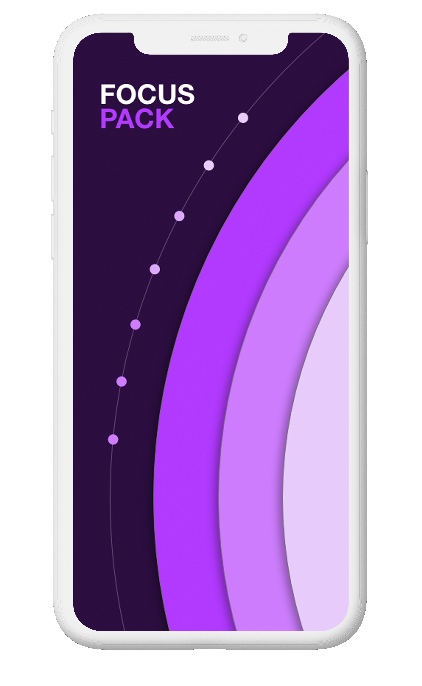
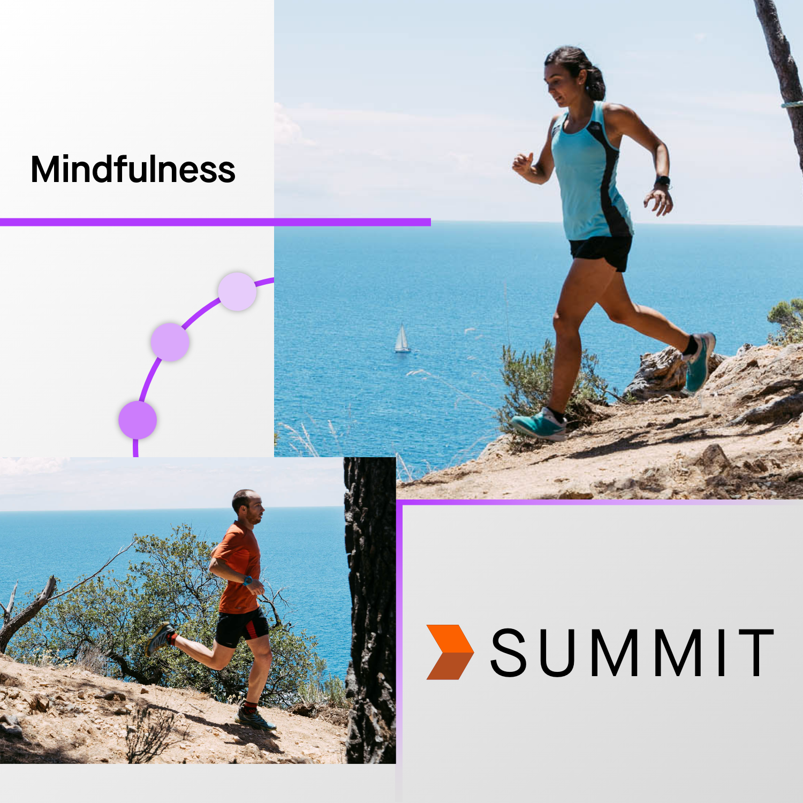

Disclaimers:
* I am not an employee of Strava, nor do I represent their views or business interests.
* I am, though, an avid user of Strava and UX designer who wants to explore mindful training.
* This project is being presented in the style of Strava’s blog.
Everyday, you have got to make the decision to get up and train. It’s not such a simple decision. Taking that first step regularly means sifting through the emotional junk of life. Often, this slips into a workout or is substituted for another type of distraction. Whether you’re in a peak or valley of training, it can be really difficult to see how your mental state affects fitness. But is it really that big of a deal?
Body + Mind
Exercise has many psychological benefits including improved memory1, more cognitive flexibility2, and stress relief3 with an added self esteem boost4. And if that’s not enough, it can improve your mood and shows similar effectiveness to antidepressants5.
This is all well and good during peaks in training, but what about the valleys? That’s where the mind holds the cards: it can unlock untapped potential in your body6 while reducing depression7 on one day, but on another increase injury risk8. Fortunately, that power is in your control.

Your journey, mindfully.
Summit’s Mindfulness feature tracks how much you’re focusing on your mind during your workouts. With the new shading scale, it's super easy to see if you’re becoming more mindful in training, but hard to tell by exactly how much. This is intentional: the focus is on the journey, not the numbers.

How's it work?
The Mindfulness feature uses two new workout components (Warm Up and Mindful Time) combined with data from your heart rate monitor or the Perceived Mindfulness tool. It then takes into account the duration of your workout to assign a Relative Mindfulness score to the activity. This data is displayed with our unique chart to give you a clear picture of your journey. Mindfulness can capture both the build up of focus when your mind and body are in sync as well as the loss of it when you get distracted.

Warming up.
What happens before you hit “Start”? The Warm Up feature helps remind you to spend time prepping your mind and body before a workout and rewards you for it. Warming up positively affects your mind, and therefore, your Mindfulness score.

Preparing mind and body.
You’ll see two options when you warm up: mind and body. Choose mind, and a guided breathing routine will help channel your focus and get your mind ready for the workout. Choose body, and a timer will gently nudge you to progress through your stretches.

Mindful Goals.
Sometimes a gentle nudge can transform a training session. With Mindful Goals, pick exactly what you want to focus on during your workout. Whether you want to enjoy nature more or just stay in the moment, Mindful Goals keeps you on track.

Stay focused.
Ever look down at your phone and get discrouaged by the time left? Mindful Goals take you away from the stress of the numbers and refocus you to a more mindful state. Connect to your mind, body, and surroundings by looking at your goals instead of your stats.

These unique set of features only enhances your experience in Strava. See how mindfulness impacts your fitness with the Mindfulness Plot and stay focused during your workouts by setting and using Mindful Goals. By wamring up your mind and body, workouts can be enhanced both physically and mentally.
Stay mindful, Strava style.